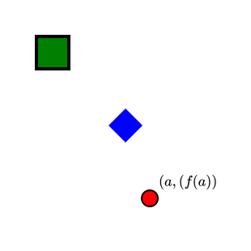
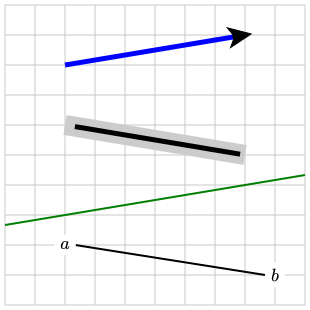
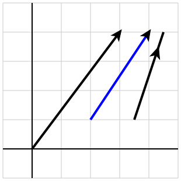
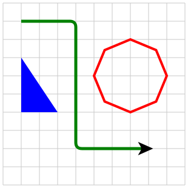

Section 3.5 Points, lines, and polygons
In this section, we will begin to introduce some simple graphical components, such as points, lines, vectors, and polygons.
Subsection 3.5.1 Points
Figure 3.5.1 shows a collection of points and various attributes describing them. The PreFigure source follows in Listing 3.5.2.

<diagram dimensions="(300, 300)" margins="5">
<coordinates bbox="(0, 0,5, 5)">
<point p="(1,4)" size="20" style="box"
fill="green" stroke="black" thickness="4"/>
<point p="(2.5, 2.5)" size="15" style="diamond"
fill="blue" stroke="none"/>
<point p="(3,1)" size="10"> <m>(a,(f(a))</m> </point>
</coordinates>
</diagram>
In the usual way, a point will have stroke and fill attributes. There are additional attributes that specify its appearance.
- p
- The
@pgives the location at which the point will be centered. - style
- This attribute controls the shape of the point. There are three options:
@style="box", "diamond", "circle"with "circle" being the default. - size
- This attribute specifies the size of the point in SVG units.
Notice that a label may be attached to a point by including the label’s text within the
<point> element. In this case, attributes may be added to the point, such as @alignment and @offset, to control the positioning of the label. Behind the scenes, the label and point are placed within a <group> element, and the point’s handle transferred to the <group> for annotating.Subsection 3.5.2 Lines
A few lines are shown in Figure 3.5.3 with the PreFigure source presented in Listing 3.5.4.

<diagram dimensions="(300, 300)" margins="5">
<coordinates bbox="(0,0,5,5)">
<grid/>
<line endpoints="((1,4), (4,4.5))" stroke="blue"
thickness="5" arrows="1"/>
<line p1="(1,3)" p2="(4,2.5)" stroke="lightgray" thickness="20"/>
<line p1="(1,3)" p2="(4,2.5)" endpoint-offsets="(10, -5)" thickness="5"/>
<line endpoints="((1,1.5),(4,2))" stroke="green" infinite="yes"/>
<definition>p1=(1,1)</definition>
<definition>p2=(4.5,0.5)</definition>
<line endpoints="(p1,p2)" endpoint-offsets="((10,0), (-10,0))"/>
<label p="p1" clear-background="yes"><m>a</m></label>
<label p="p2" clear-background="yes"><m>b</m></label>
</coordinates>
</diagram>
Any stroke attributes can be added to a line though fill attributes do no apply.
- endpoints
- The endpoints of a line may be specified together using the
@endpointsattribute or separately using@p1and@p2. - infinite
- If
@infinite="yes", then the line is drawn as if it were infinite in extent. - arrows
- If
@arrows="1", then an arrow is drawn at the second endpoint. If@arrows="2", then an arrow is drawn at both endpoints. - endpoint-offsets
-
Sometimes you may want the line to begin or end near, but not exactly, at the given endpoints. The bottom line in Figure 3.5.3 is an example in that the line is connecting two labels placed at two endpoints. We move the endpoints slightly so that the line does not interfere with the label. In this case, the endpoint offsets are a pair of vectors, each of which moves an endpoint by the given vector in SVG units.Another line in the figure shows a second use of offsets. In this case, the offsets are a single pair of SVG units. The direction of the line is preserved but each endpoint is moved along the line by the given offset. This could be helpful when drawing arrows since the arrow head will extend slightly beyond the endpoint of the line.
Subsection 3.5.3 Vectors
In some sense,
<vector>s are a redundant element since we can always draw lines and attach arrows. However, a goal of PreFigure is to facilitate authors thinking mathematically about the exposition so <vector> should be used when including a vector in a diagram. Vectors are also drawn with a default thickness that differentiates them from lines drawn with their default attributes.
<diagram dimensions="(300, 300)" margins="5">
<coordinates bbox="(-1,-1,5,5)">
<grid-axes decorations="no"/>
<vector v="(3,4)"/>
<vector v="(1,3/2)" tail="(2,1)" scale="2" stroke="blue"/>
<vector v="(1,3)" tail="(3.5,1)" head-location="0.8"/>
</coordinates>
</diagram>
In addition to stroke attributes, a vector supports the following attributes.
- v
- The attribute
@vis the 2-dimensional mathematical vector. - tail
- The attribute
@tailrepresents the tail of the vector. - scale
- The value of
@scaleacts as scalar multiplication on@v. - head-location
- Usually, the head of a vector is placed at the tip of the vector. There may be occasions, however, when you want to place the head somewhere else along the shaft. Specifying
@head-location="0.8"places the arrow head at a location 80% of the way from the tail to the tip.
Subsection 3.5.4 Polygons
Polygons are paths drawn by connecting a set of points by line segments. The effect is different from drawing a set of line segments, however, since the ends of the line segments will be joined to form a whole. For example, the shape on the left of Figure 3.5.7 is drawn with two
<line>s while that on the right is a <polygon>.<polygon>s are quite versatile and should more properly be thought of as a polygonal path having both stroke and fill attributes. Figure 3.5.8 demonstrates some possibilities with the PreFigure soure given in Listing 3.5.9.
<diagram dimensions="(300,300)" margins="5">
<coordinates bbox="(-5,-5,5,5)">
<grid/>
<polygon points="((-2,-1),(-4,-1),(-4,2))" closed="yes"
fill="blue"/>
<polygon points="(2,1)+2*(cos(k*pi/4),sin(k*pi/4))"
parameter="k=0..7" closed="yes"
stroke="red" thickness="4"/>
<polygon points="((-4,4),(-1,4),(-1,-3),(3,-3))"
corner-radius="10" arrows="1" thickness="5"
stroke="green"/>
</coordinates>
</diagram>
A
<polygon> requires a set of points given by the @points attributes. While you may simply list the points, PreFigure also allows you to provide a rule for generating the list of points.- points
- The value of the
@pointsattribute may be a list of points or a single point containing a named parameter. - parameter
- The
@parameterattribute gives a range of values for generating the list of points. The format is@parameter="parameter_name=start..stop". - closed
- By default, polygons are not closed, but
@closed="yes"will close a polygon. - arrows
- To place arrows at the end of a polygonal path, use
@arrows="1"to add an arrow at the end and@arrows="2"to also add an arrow at the beginning. - corner-radius
- A polygonal path can be smoothed out using the
@corner-radiusattribute. The value of this attribute should be a positive number of SVG units.